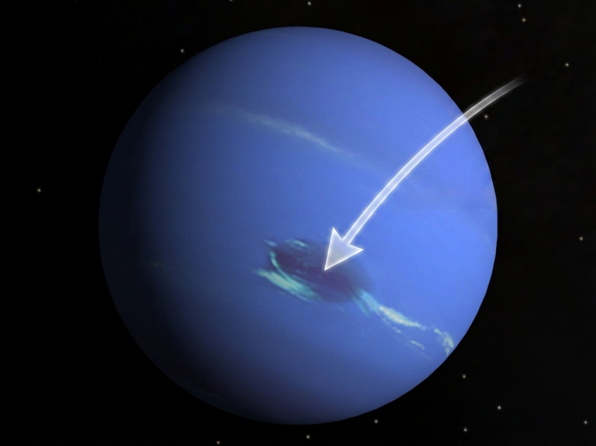
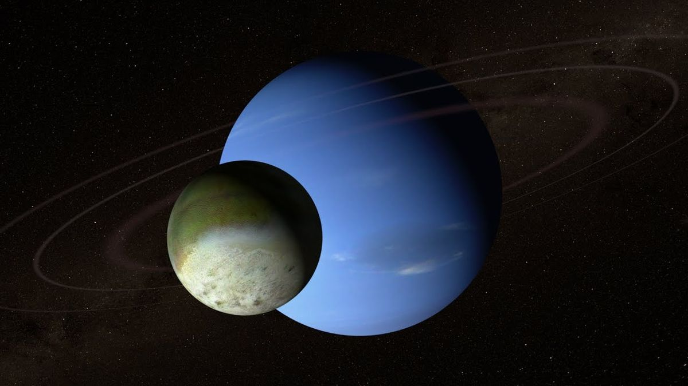

Neptune is the eighth and most distant major planet from the Sun. It is an ice giant famous for its deep blue color, powerful supersonic winds, giant storms, faint ring system, and the remarkable moon Triton. Despite receiving very little sunlight, Neptune is one of the most dynamic worlds in the Solar System.
Neptune is slightly smaller than Uranus but significantly denser.
Gravity
11.15 m/s²
Gravity on Neptune is slightly stronger than Earth's.
Length of Year
165 Years
Neptune completes one orbit around the Sun every 165 Earth years.
Known Moons
16
Neptune has 16 confirmed natural satellites, with Triton being the largest.
Neptune Overview
Neptune is the eighth and outermost major planet in the Solar System. Classified as an ice giant, it is composed primarily of hydrogen, helium, water, ammonia, and methane. Neptune's deep blue color comes from methane in its atmosphere, although scientists believe additional atmospheric processes contribute to its rich blue appearance. Despite receiving only about one nine-hundredth of the sunlight Earth receives, Neptune possesses the fastest winds measured anywhere in the Solar System.
Planet Classification
Planet Type — Ice Giant
Solar System Order — 8th Planet
Average Distance — 4.50 Billion km
Orbital Period — 164.8 Earth Years
Rotation Period — 16h 6m
Average Orbital Speed — 5.43 km/s
Axial Tilt — 28.32°
Physical Characteristics
Diameter — 49,244 km
Radius — 24,622 km
Mass — 1.024 × 10²⁶ kg
Density — 1.64 g/cm³
Surface Gravity — 11.15 m/s²
Escape Velocity — 23.5 km/s
Known Moons — 16
Environment
Atmosphere — Hydrogen & Helium
Methane — Produces Blue Color
Cloud Temperature — ≈ -214°C
Ring System — 5 Main Rings
Magnetic Field — Tilted
Surface — No Solid Surface
Interior — Water-Ammonia Mantle
Atmosphere & Weather
Neptune's atmosphere is incredibly active despite its great distance from the Sun. It experiences powerful storms, bright methane-ice clouds, and winds exceeding 2,100 km/h—the fastest sustained winds known in the Solar System.
Hydrogen
80%
Hydrogen forms most of Neptune's atmosphere.
Helium
19%
Helium is the second most abundant atmospheric gas.
Methane
1.5%
Methane absorbs red light and gives Neptune its blue appearance.
Wind Speed
2,100 km/h
The strongest planetary winds ever measured.
The Great Dark Spot
During Voyager 2's historic flyby in 1989, scientists discovered the Great Dark Spot—a giant storm roughly the size of Earth. Similar to Jupiter's Great Red Spot, it was a massive high-pressure storm system. Later observations showed that these storms can disappear and new ones can form elsewhere on the planet.
Discovery
Observed by Voyager 2 in 1989.
Size
Approximately the size of Earth.
Nature
A giant atmospheric storm driven by Neptune's dynamic weather.
Magnetic Field
Neptune's magnetic field is unusual because it is significantly tilted relative to the planet's rotation axis and offset from its center. This creates a highly complex magnetosphere that changes dramatically as Neptune rotates.
Magnetic Tilt
Approximately 47 degrees from the rotation axis.
Offset Center
The magnetic field does not originate from the planet's exact center.
Auroras
Charged particles produce dynamic auroras near Neptune's magnetic poles.
Interior Structure
Neptune likely contains a rocky core surrounded by a thick mantle of hot water, ammonia, and methane under extreme pressure. Above this mantle lies a deep atmosphere composed mainly of hydrogen and helium.
Rocky Core
Dense rock and metal at Neptune's center.
Icy Mantle
Superheated water, ammonia, and methane under enormous pressure.
Outer Atmosphere
Hydrogen, helium, and methane clouds.
Extreme Pressure
Pressure rises dramatically toward Neptune's deep interior.
Neptune's Ring System
Neptune possesses five faint rings composed mainly of dust and dark particles. Some sections appear brighter due to dense clumps called ring arcs, which are maintained by the gravitational influence of nearby moons.
Known Rings
Five principal rings.
Composition
Dust, dark rocky particles, and small amounts of ice.
Ring Arcs
Bright sections remain stable through gravitational interactions with nearby moons.
Major Moons of Neptune
Neptune has 16 confirmed natural satellites. The largest, Triton, is one of the most extraordinary moons in the Solar System because it orbits Neptune in the opposite direction of the planet's rotation. Scientists believe Triton was once a dwarf planet captured by Neptune's gravity billions of years ago.
🌕 Triton
Triton is Neptune's largest moon and the seventh-largest moon in the Solar System. It has a retrograde orbit, nitrogen ice, cryovolcanoes, and an extremely thin atmosphere. Scientists believe it may hide a subsurface ocean beneath its icy crust.
🌕 Nereid
Nereid has one of the most eccentric orbits of any large moon. During its journey around Neptune, its distance from the planet changes dramatically.
🌕 Proteus
Proteus is Neptune's second-largest moon. Despite its large size, gravity has not pulled it into a perfectly spherical shape.
🌕 Larissa
Larissa is an irregularly shaped inner moon discovered during stellar occultation observations and later confirmed by Voyager 2.
🌕 Hippocamp
Discovered in 2013 using Hubble observations, Hippocamp is one of Neptune's smallest known moons and may be a fragment of Proteus created by an ancient collision.
🌕 Other Moons
Additional moons including Despina, Galatea, Naiad, Thalassa, Halimede, Sao, Laomedeia, Psamathe, and Neso continue to help scientists understand Neptune's complex satellite system.
Voyager 2 Mission
Voyager 2 became the first—and so far only—spacecraft to visit Neptune during its historic flyby on August 25, 1989. The mission completely transformed humanity's understanding of the Solar System's most distant giant planet.
Launch
August 20, 1977
Neptune Flyby
August 25, 1989
Closest Approach
Approximately 4,950 kilometers above Neptune's cloud tops.
Major Discoveries
Confirmed Neptune's rings, discovered six new moons, observed the Great Dark Spot, measured supersonic winds, and studied Triton's active geysers.
Exploration Timeline
1846
Neptune was discovered mathematically by Urbain Le Verrier and Johann Galle after irregularities were observed in Uranus' orbit.
1846
Triton was discovered only 17 days after Neptune itself.
1984
Neptune's faint ring system was confirmed through Earth-based observations.
1989
Voyager 2 performed the first and only close flyby of Neptune.
2000s
Hubble Space Telescope observed changing storms, clouds, and seasonal weather patterns.
Future
NASA and ESA continue evaluating concepts for a dedicated Neptune Orbiter and Triton lander mission.
Amazing Neptune Facts
🌪 Fastest Winds
Neptune experiences winds exceeding 2,100 km/h, the fastest measured anywhere in the Solar System.
🌊 Deep Blue World
Its vivid blue appearance comes mainly from methane, although additional atmospheric chemistry likely enhances the color.
🌕 Triton
Triton orbits backward, indicating it was likely captured from the Kuiper Belt.
❄ Ice Giant
Neptune's interior contains enormous quantities of water, ammonia, and methane under extreme pressure.
💍 Hidden Rings
Neptune has five faint rings with bright ring arcs maintained by nearby moons.
🚀 One Visitor
Voyager 2 remains the only spacecraft to explore Neptune directly.
Scientific Importance
Neptune is an essential laboratory for understanding ice giant planets. Many of the thousands of exoplanets discovered around distant stars are similar in size and composition to Neptune. By studying Neptune's atmosphere, interior, rings, magnetic field, and moons, scientists gain valuable insights into planetary formation throughout the Milky Way. Triton is also considered one of the most promising ocean-world candidates beyond the inner Solar System, making future exploration a major scientific priority.
Neptune: The Dynamic Blue Ice Giant
Neptune is the most distant major planet in our Solar System and one of its most fascinating worlds. Although sunlight reaching Neptune is nearly 900 times weaker than on Earth, the planet possesses an incredibly active atmosphere filled with giant storms, high-altitude methane clouds, and the fastest winds ever measured on any planet. Neptune demonstrates that even the coldest regions of the Solar System remain surprisingly dynamic.
The planet's deep blue appearance is produced primarily by methane gas, which absorbs red wavelengths of sunlight while reflecting blue light. Modern research suggests additional atmospheric compounds may also contribute to Neptune's richer blue color compared to Uranus. Deep inside Neptune, enormous pressures transform water, ammonia, and methane into exotic states of matter unlike anything found naturally on Earth.
Neptune is also home to Triton, one of the most remarkable moons in the Solar System. Triton likely originated in the Kuiper Belt before being captured by Neptune's gravity billions of years ago. It possesses nitrogen geysers, frozen plains, and may hide a liquid ocean beneath its icy crust, making it one of the most exciting targets for future exploration.
Future spacecraft missions to Neptune could revolutionize planetary science. Scientists hope to study its powerful storms, unusual magnetic field, ring system, and mysterious interior while investigating Triton's potential subsurface ocean. Because many exoplanets discovered around other stars resemble Neptune in size, learning more about this distant world helps us better understand planetary systems throughout the universe.
Neptune Gallery
Representative scientific imagery of Neptune captured by Voyager 2, Hubble Space Telescope, and modern observatories.
Global View
A full-disk image showing Neptune's deep blue atmosphere.

Great Dark Spot
Voyager 2 captured Neptune's giant storm system in 1989.

Triton
Neptune's largest moon with cryovolcanoes and a retrograde orbit.
Frequently Asked Questions
Why is Neptune blue?
Methane absorbs red light while reflecting blue wavelengths. Additional atmospheric chemistry may also contribute to Neptune's rich blue color.
Why are Neptune's winds so fast?
Scientists are still investigating this mystery, but Neptune's internal heat likely powers its extremely strong atmospheric circulation.
Has anyone landed on Neptune?
No. Neptune has no solid surface, and no spacecraft has entered its atmosphere.
What is Triton?
Triton is Neptune's largest moon and is believed to be a captured Kuiper Belt object with nitrogen geysers and possible underground oceans.
Does Neptune have rings?
Yes. Neptune has five faint rings made primarily of dust and dark rocky particles.
Which spacecraft visited Neptune?
Voyager 2 remains the only spacecraft to have explored Neptune up close.